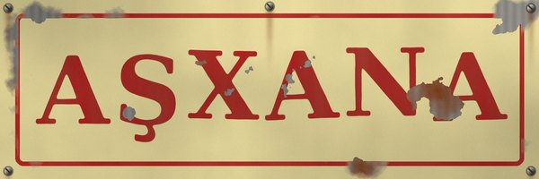
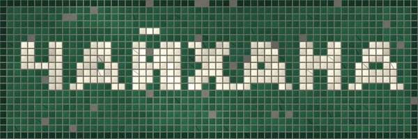
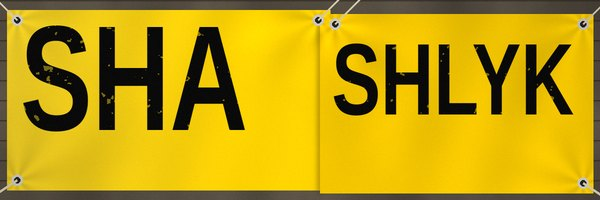

Lettering I see in Talas and on trips. I redraw them (photos are too heavy for 20 MB and also the shop owners ask what I'm doing).

AŞXANA Talas, Bazar-i Kalan. 'Aşxana' with the official x. Painted 2019. The painter did the ş with a hook like a 5.

ЧАЙХАНА Talas, the Old City. Cyrillic, 1980s at least. The ч is so beautiful. Nobody will repaint it, I hope.

SHASHLYK Trans-Talas Highway. Press spelling, Impact font, a printed banner. The S's are different sizes because two banners were joined.JAÑI DÜKÖN Nurzhan, mkr. 3. 'New shop'. The Ñ's tilde is a separate piece of plastic, glued on, slightly wrong. It's perfect.TIGUUCHU A tailor, Talas. 'Tıguuçu' in official, but the sign shop had no ı and no ç, so: TIGUUCHU, and the I without a dot is actually correct by accident.İRAD POÇTASI The post office. Capital İ with a dot, done right. The state has the good fonts.